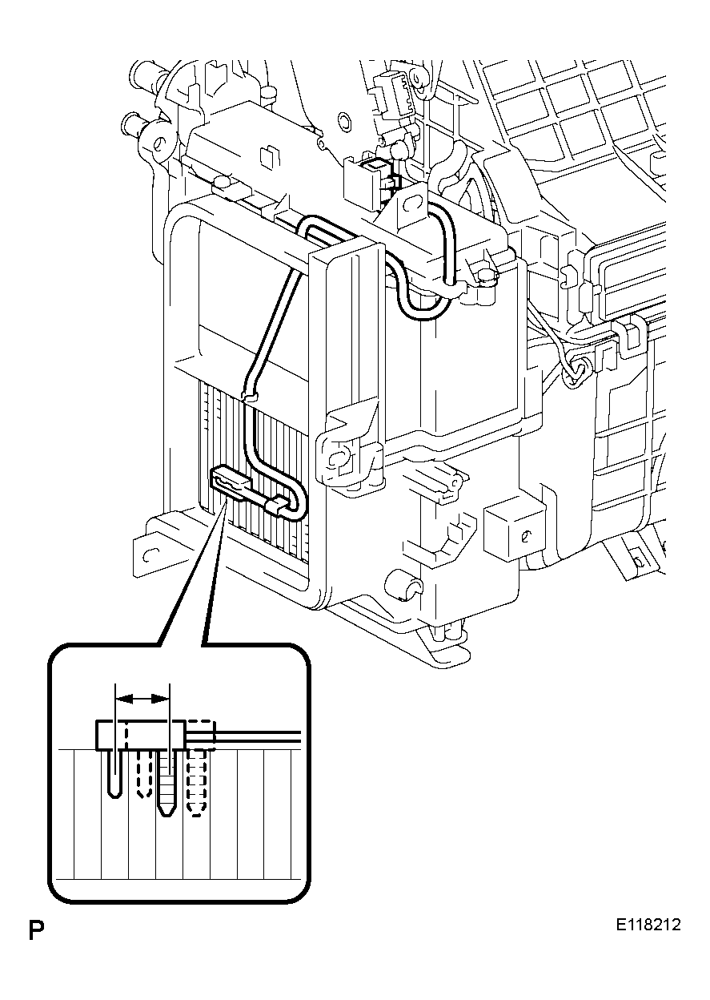

Evaporator Temperature Sensor: Installation
- INSTALL COOLER THERMISTOR
- Install the cooler thermistor and attach the clamp.
NOTE:
- When installing the thermistor, move it one fin toward the front of the vehicle from its former position. Do not install it to its former position, as that fin may be bent and the thermistor may not function properly.
- Do not install the thermistor to a position that is horizontally toward the rear of the vehicle.
- INSTALL AIR CONDITIONING BLOWER ASSEMBLY
- Install the A/C blower (see INSTALLATION
).

Courtesy of © TOYOTA, LICENSE AGREEMENT TMS1002